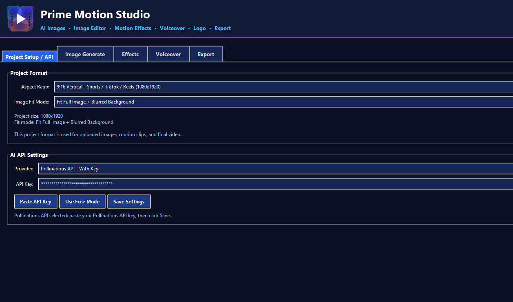
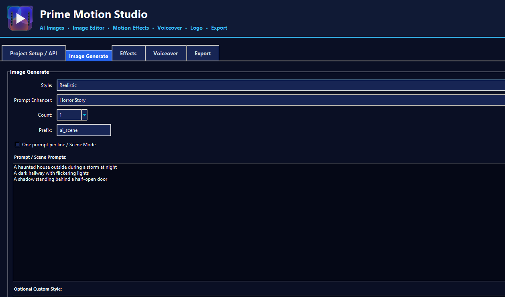
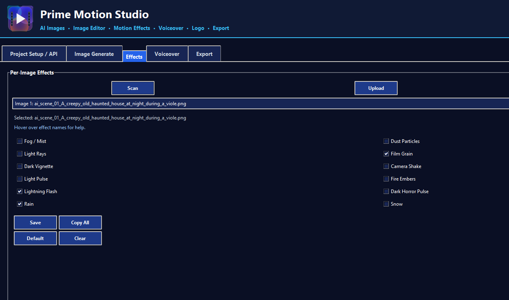
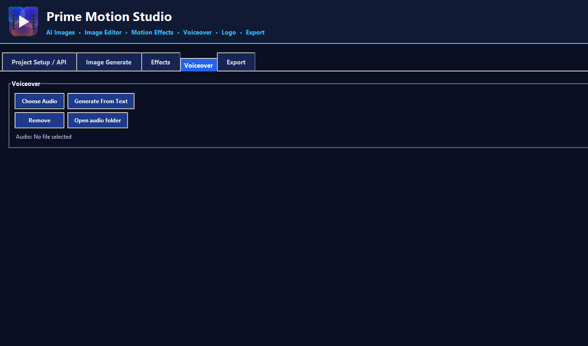
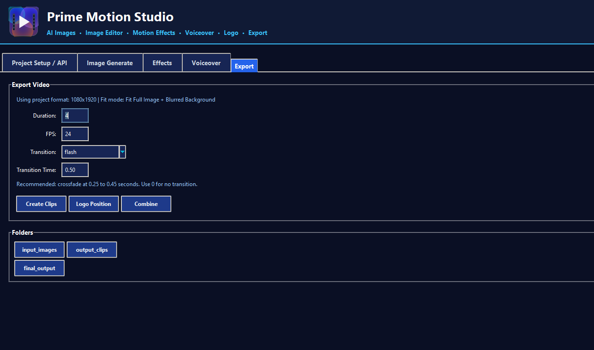

Project Setup / API
Choose your video format, image fit mode, and AI provider settings.
Prime Motion Studio is a beginner-friendly Windows tool that helps creators turn simple images into vertical videos with motion, effects, voiceover, logo watermark, and final export tools — without complicated editing software.
If you create scary stories, fact shorts, faceless videos, AI stories, product promos, or social media content, Prime Motion Studio gives you a faster way to build videos from images and export them for platforms like YouTube Shorts, TikTok, and Instagram Reels.
A clean dark interface with separate tabs for project setup, AI image generation, effects, voiceover, logo, and final export.

Choose your video format, image fit mode, and AI provider settings.

Write prompts, choose a style, select count, and create story scenes.

Apply effects like rain, lightning, film grain, snow, fog, and more to selected images.

Add your own audio file or generate narration from text.

Set duration, FPS, transition, logo position, and combine everything into a final video.
Turn still images into cinematic motion clips for vertical short-form content.
Create images from prompts and build story scenes for your videos.
Add atmosphere like fog, rain, snow, lightning, film grain, glow, and more.
Add voiceover or audio files directly into your final exported video.
Upload your logo and control position, size, and opacity before export.
Designed for YouTube Shorts, TikTok, Instagram Reels, and mobile-first content.
You do not need to open complicated video editing software just to create a short. Prime Motion Studio keeps the process simple and focused.
Start with your story images, product images, or AI-generated scenes.
Select visual effects for each image to make your video feel more alive.
Import voiceover, narration, or music for your final video.
Create your final vertical video ready for YouTube Shorts and social platforms.
No. The tool is made with a simple interface so you can use buttons and options.
Yes. It is designed for vertical 9:16 content, which is perfect for Shorts, TikTok, and Reels.
Yes. You can add an audio or voiceover file and use it in your final exported video.
Yes. You can upload your logo and control its position, size, and transparency.
Turn your images into videos faster and create more content for your channels.
Buy Prime Motion Studio